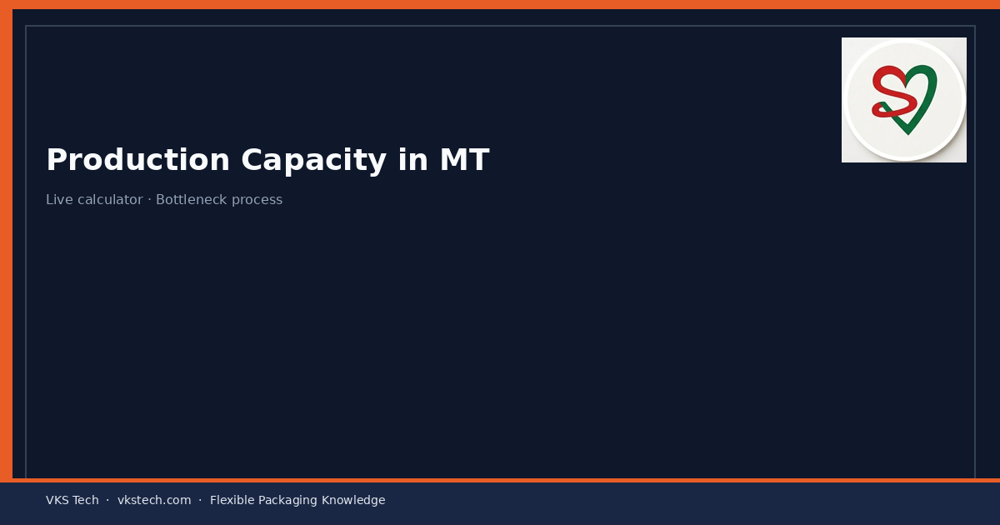
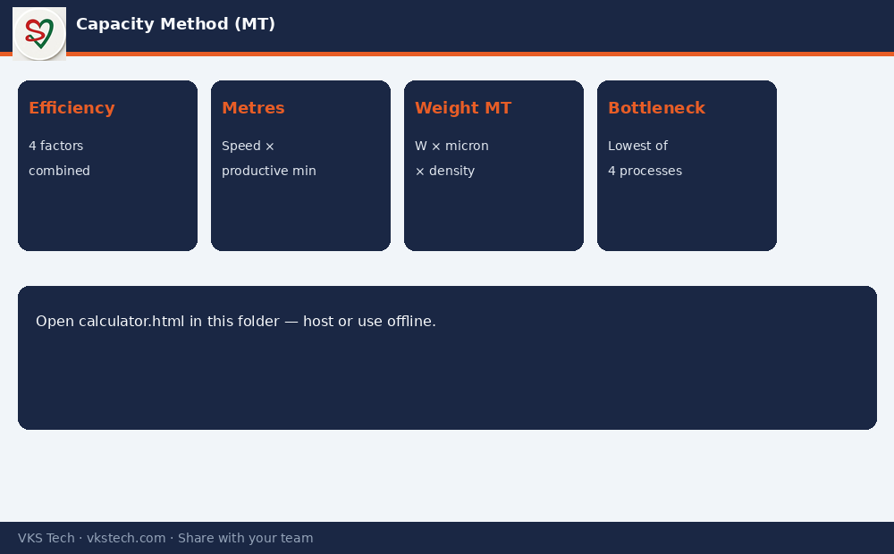

📊 Stop Arguing About Capacity in Meetings. Calculate It from Speed, Micron, Roll Length, Changeover and Efficiency — in Metric Tonnes.
📖 12-min read · Capacity · PPC + Plant Heads · Live calculator
Converting capacity is not brochure speed × hours. It is what remains after uptime, changeovers (driven by roll length and job changes), quality loss and speed efficiency — converted into weight using width, micron and density. This article shows the method and gives you a working calculator you can host or use offline.
- Available minutes = days × shifts × hours × 60 × overall efficiency
- Overall efficiency from: Uptime × (1 − changeover loss) × (1 − quality loss) × speed efficiency
- Changeover loss from: roll length + changeover time + machine speed
- MT from: metres × width × thickness × density
- Bottleneck capacity = lowest of Print / Lam / Slit / Pouch MT

Live Calculator
Open the calculator below (same folder for hosting). Enter your machine counts, speeds, microns, roll length and loss factors. It returns monthly capacity in MT and highlights the bottleneck process.
🚀 Open Converting Plant Capacity Calculator
File in this folder: calculator.html — host it with the blog or open locally in any browser.
Next → Role of PPC in a Converting Plant
📊 मीटिंग में क्षमता पर बहस बंद करें। स्पीड, माइक्रोन, रोल लेंथ, चेंजओवर और एफिशिएंसी से MT में निकालें।
📖 12-मिनट पढ़ें · क्षमता · PPC + प्लांट हेड · लाइव कैलकुलेटर
उपलब्ध मिनट × स्पीड → मीटर → माइक्रोन + घनत्व से MT। बॉटलनेक = सबसे कम प्रोसेस।
🚀 कन्वर्टिंग प्लांट क्षमता कैलकुलेटर खोलें
अगला → कन्वर्टिंग प्लांट में PPC की भूमिका